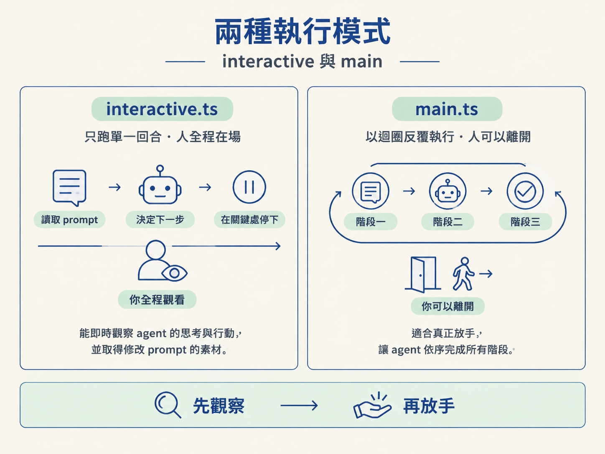
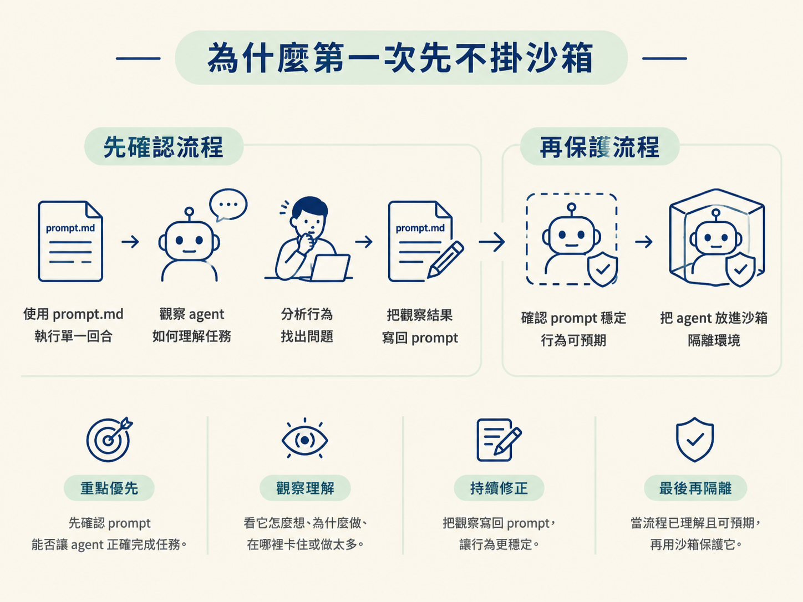

當你想讓 coding agent 自己工作，第一個問題通常不是「要不要放手」，而是「它到底要在哪裡跑、用什麼跑」。如果一開始就把 agent、沙箱、長時間迴圈全部接上，設定可能還沒完成，你也還不知道 agent 會怎麼理解任務，問題卻已經混在一起了。
這一節會介紹 Sandcastle 和它提供的兩種執行模式。我們會先看懂 agent、sandbox 和 prompt 如何彼此分工，再比較 interactive.ts 與 main.ts。第一次操作時，先選擇能讓你看見 agent 行為的組合：跑單一回合，而且先不掛沙箱。
上一節拆穿了「do phase N」這個說法，知道它其實可以寫成一個 for 迴圈，重複執行同一類動作。但知道原理，和真的把它跑起來，中間還隔著幾個很實際的問題：
這些問題很難一次全部回答。硬是一步到位，常見的結果是設定花了很久，卻還沒看見 agent 真正執行過任何事情。
AFK agent 最大的風險，就是你看不到它出錯。你交代一件事，讓它在你不在場時跑上一、兩個小時，最後它只回報「做完了」；但如果你事前沒有盯著它跑過幾次，就不會知道它中間做了什麼，也不知道它在哪一步走偏。
因此，較穩妥的學習曲線是先看緊，再慢慢放鬆：先和 agent 互動、定期檢查它的行為，觀察它怎麼理解任務，再根據這些觀察修改 prompt 和工作流程。這段時間的目的很單純，就是不要讓錯誤悄悄發生在你背後。
Sandcastle 是作者為了補上生態系缺口而寫的函式庫。它想提供的是一個不綁定特定 agent、也不綁定特定沙箱的執行器。
換句話說，你可以放入不同的 agent，例如作者常用的 Claude Code，也可以使用 Codex 或 OpenCode；沙箱則可以選擇本機的 Docker、Podman，或使用 Vercel 等遠端隔離環境。最後，再餵給它一段 prompt。
可以把 Sandcastle 想成旅行時的萬用轉接頭。電器是哪個品牌、當地插座是哪種規格，都不需要因此換掉整台電器；只要更換適合的插頭，就能讓兩邊接起來。Sandcastle 提供的，就是這種把不同元件接在一起的彈性。
一次執行 agent 時，Sandcastle 主要認得三個東西：
把三者拆開的好處，是你可以一次只改一個變數。你可以先固定 prompt，再更換 agent；也可以先固定 agent，等真的需要隔離時，再加上沙箱。這樣除錯時，就像一次只換一條線，不會同時面對三個未知數。
Sandcastle 提供兩個入口，剛好對應先觀察、再放手的學習曲線：interactive.ts 和 main.ts。
| interactive.ts | main.ts | |
|---|---|---|
| 跑幾次 | 只跑單一回合，完成後停止 | 用迴圈反覆執行，直到結束 |
| 人在不在旁邊 | 人在，全程盯著看 | 人可以先離開，之後再回來查看 |
| 主要用途 | 調整 prompt、理解 agent 的行為 | 真正放手執行 |
| 適合什麼時候使用 | 現在，作為第一步 | 之後，等觀察足夠再使用 |
interactive.ts 的關鍵價值，是它只執行一回合。因為時間範圍短，你可以從頭到尾看著 agent：它怎麼讀 prompt、怎麼決定下一步、在哪些地方停下來。
這些觀察會成為你修改 prompt 的材料。相反地，如果一開始就使用 main.ts 的迴圈，等三個階段都跑完才回頭查看，你可能早已錯過發現問題的時機。

直覺上，執行 agent 前似乎應該先把沙箱準備好。但作者刻意把順序反過來：第一次先在不掛沙箱的環境中執行。
原因不是沙箱不重要，而是沙箱本身的設定有些麻煩。若一開始就處理隔離環境，注意力很容易被設定細節帶走，反而沒有先確認最重要的事：prompt 能不能讓 agent 正確完成任務。
因此，第一次會使用 prompt.md 來執行，而且這份 prompt 刻意模仿之後真正的 AFK agent 會收到的內容。你可以待在旁邊觀察它怎麼理解任務、為什麼採取某個行動、在哪裡卡住，或是哪裡做得太多；接著，再把這些觀察寫回 prompt。
等 prompt 變得穩定，而且你已經大致知道 agent 會做出什麼行為，再花力氣把它放進沙箱。這樣沙箱是在保護一個你已經理解的流程，而不是拿來遮住一個你還沒看懂的流程。

這裡有一個容易混淆的地方：interactive 模式即使跑得很順，也不代表你已經真正放手。
它雖然只執行單一回合，但 agent 在過程中仍可能提出權限請求，等你按下允許後才繼續。換句話說，人還是卡在迴圈裡，只是需要介入的次數比較少。
這也正是它適合當第一步的原因。你可以近距離看見 agent 想執行什麼、打算修改哪些內容，還有它什麼時候需要你的同意。
要變成真正的 AFK，後面還需要移除這些停頓、換上隔離環境，再把單一回合包進迴圈。那些是後續節點要處理的事；現在先把觀察做好，讓你知道 agent 究竟在做什麼。
Sandcastle 是一個不綁定特定 agent、也不綁定特定沙箱的執行器。它把 agent、sandbox、prompt 三個變數拆開，讓你一次只替換一個元件，除錯時不必同時面對多個未知。它提供兩種模式：interactive.ts只跑單一回合，適合人在旁邊觀察並調整 prompt；main.ts才會用迴圈反覆執行。第一次刻意不掛沙箱，是為了先把注意力放在觀察與修 prompt，而不是先處理隔離環境。不過，interactive 仍然會要求人工授權，所以它還不是真正的 AFK。
這幾個元件的分工，可以先這樣記：interactive.ts 負責讓你看懂一個回合，main.ts 才負責把回合重複跑起來；prompt 決定 agent 要做什麼，sandbox 則決定它能在哪裡做。
下一步就是打開 interactive.ts 和它的 prompt.md，實際跑一次單一任務。接著，我們會拆解 prompt expansion 這個 Sandcastle 專屬的語法，看看 PRD 和計畫是怎麼被放進 agent 收到的 prompt 裡。